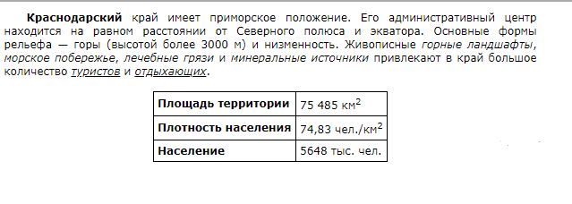
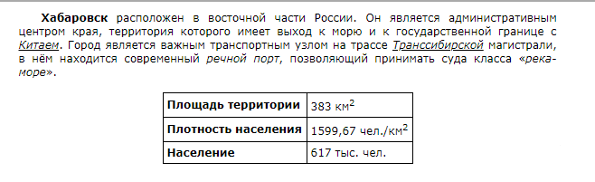

Информатика ОГЭ:
Задания №13 - практика
13.1-1
Используя информацию и иллюстративный материал, содержащийся в каталоге «Амурский тигр», создайте презентацию из трёх слайдов на тему «Амурский тигр». В презентации должны содержаться краткие иллюстрированные сведения о внешнем виде, об ареале обитания, образе жизни и рационе амурских тигров. Все слайды должны быть выполнены в едином стиле, каждый слайд должен быть озаглавлен.
Презентацию сохраните в файле, имя которого Вам сообщат организаторы экзамена. Файл ответа необходимо сохранить в одном из следующих форматов: *.odp, или *.ppt, или *.pptx.
Амурский тигр.rar13.2-1
Создайте в текстовом редакторе документ и напишите в нём следующий текст, точно воспроизведя всё оформление текста, имеющееся в образце.
Данный текст должен быть набран шрифтом размером 14 пунктов обычного начертания. Отступ первой строки первого абзаца основного текста — 1 см. Расстояние между строками текста не менее одинарного, но не более полуторного междустрочного интервала.
Основной текст выровнен по ширине; в ячейках таблицы применено выравнивание по левому краю. В основном тексте и таблице есть слова, выделенные полужирным, курсивным шрифтом и подчёркиванием. Ширина таблицы меньше ширины основного текста. Таблица выровнена на странице по центру горизонтали.
При этом допустимо, чтобы ширина Вашего текста отличалась от ширины текста в примере, поскольку ширина текста зависит от размеров страницы и полей. В этом случае разбиение текста на строки должно соответствовать стандартной ширине абзаца.
Интервал между текстом и таблицей не менее 12 пунктов, но не более 24 пунктов.
Текст сохраните в файле, имя которого Вам сообщат организаторы. Файл ответа необходимо сохранить в одном из следующих форматов: *.odt, или *.doc, или *.docx.
13.1-2
Используя информацию и иллюстративный материал, содержащийся в каталоге «Мышь полевка», создайте презентацию из трёх слайдов на тему «Мышь полевка». В презентации должны содержаться краткие иллюстрированные сведения о внешнем виде, об ареале обитания, образе жизни и рационе мышей полевок. Все слайды должны быть выполнены в едином стиле, каждый слайд должен быть озаглавлен.
Презентацию сохраните в файле, имя которого Вам сообщат организаторы экзамена. Файл ответа необходимо сохранить в одном из следующих форматов: *.odp, или *.ppt, или *.pptx.
Мышь полевка.rar13.2-2
Создайте в текстовом редакторе документ и напишите в нём следующий текст, точно воспроизведя всё оформление текста, имеющееся в образце.
Данный текст должен быть набран шрифтом размером 14 пунктов обычного начертания. Отступ первой строки первого абзаца основного текста — 1 см. Расстояние между строками текста не менее одинарного, но не более полуторного междустрочного интервала.
Основной текст выровнен по ширине; в ячейках таблицы применено выравнивание по левому краю. В основном тексте и таблице есть слова, выделенные полужирным, курсивным шрифтом и подчёркиванием. Ширина таблицы меньше ширины основного текста. Таблица выровнена на странице по центру горизонтали.
При этом допустимо, чтобы ширина Вашего текста отличалась от ширины текста в примере, поскольку ширина текста зависит от размеров страницы и полей. В этом случае разбиение текста на строки должно соответствовать стандартной ширине абзаца.
Интервал между текстом и таблицей не менее 12 пунктов, но не более 24 пунктов.
Текст сохраните в файле, имя которого Вам сообщат организаторы. Файл ответа необходимо сохранить в одном из следующих форматов: *.odt, или *.doc, или *.docx.
